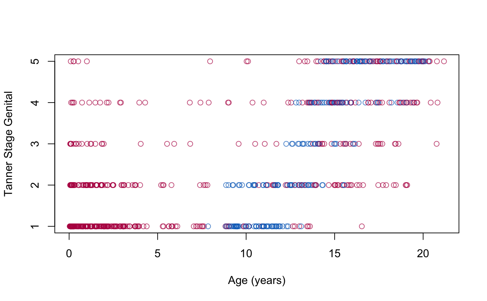
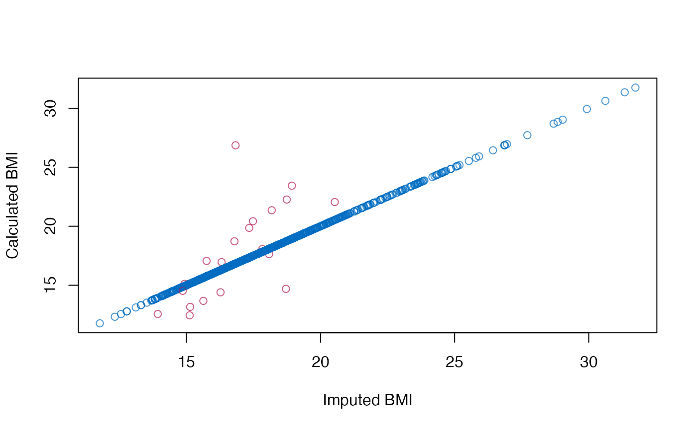
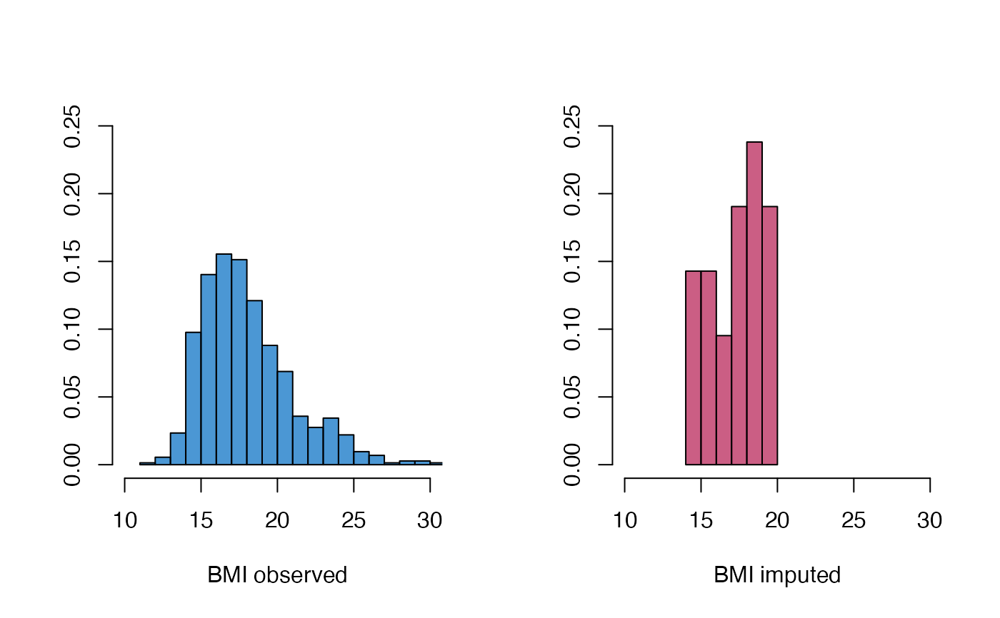
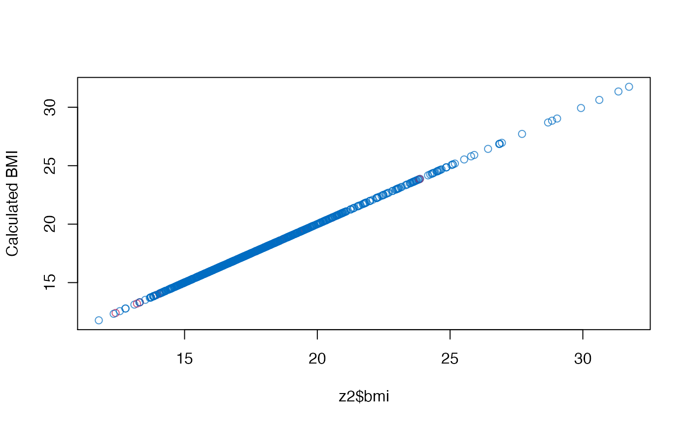

Height, weight, head circumference and puberty of 748 Dutch boys.
Format
A data frame with 748 rows on the following 9 variables:
- age
Decimal age (0-21 years)
- hgt
Height (cm)
- wgt
Weight (kg)
- bmi
Body mass index
- hc
Head circumference (cm)
- gen
Genital Tanner stage (G1-G5)
- phb
Pubic hair (Tanner P1-P6)
- tv
Testicular volume (ml)
- reg
Region (north, east, west, south, city)
Source
Fredriks, A.M,, van Buuren, S., Burgmeijer, R.J., Meulmeester JF, Beuker, R.J., Brugman, E., Roede, M.J., Verloove-Vanhorick, S.P., Wit, J.M. (2000) Continuing positive secular growth change in The Netherlands 1955-1997. Pediatric Research, 47, 316-323.
Fredriks, A.M., van Buuren, S., Wit, J.M., Verloove-Vanhorick, S.P. (2000). Body index measurements in 1996-7 compared with 1980. Archives of Disease in Childhood, 82, 107-112.
Details
Random sample of 10% from the cross-sectional data used to construct the
Dutch growth references 1997. Variables gen and phb are ordered
factors. reg is a factor.
Examples
#> #> iter imp variable #> 1 1 hgt wgt bmi hc gen phb tv reg #> 2 1 hgt wgt bmi hc gen phb tv regz <- complete(imp, 1) # create imputations for age <8yrs plot(z$age, z$gen, col = mdc(1:2)[1 + is.na(boys$gen)], xlab = "Age (years)", ylab = "Tanner Stage Genital" )# figure to show that the default imputation method does not impute BMI # consistently plot(z$bmi, z$wgt / (z$hgt / 100)^2, col = mdc(1:2)[1 + is.na(boys$bmi)], xlab = "Imputed BMI", ylab = "Calculated BMI" )# also, BMI distributions are somewhat different oldpar <- par(mfrow = c(1, 2)) MASS::truehist(z$bmi[!is.na(boys$bmi)], h = 1, xlim = c(10, 30), ymax = 0.25, col = mdc(1), xlab = "BMI observed" ) MASS::truehist(z$bmi[is.na(boys$bmi)], h = 1, xlim = c(10, 30), ymax = 0.25, col = mdc(2), xlab = "BMI imputed" )par(oldpar) # repair the inconsistency problem by passive imputation meth <- imp$meth meth["bmi"] <- "~I(wgt/(hgt/100)^2)" pred <- imp$predictorMatrix pred["hgt", "bmi"] <- 0 pred["wgt", "bmi"] <- 0 imp2 <- mice(boys, m = 1, maxit = 2, meth = meth, pred = pred)#> #> iter imp variable #> 1 1 hgt wgt bmi hc gen phb tv reg #> 2 1 hgt wgt bmi hc gen phb tv regz2 <- complete(imp2, 1) # show that new imputations are consistent plot(z2$bmi, z2$wgt / (z2$hgt / 100)^2, col = mdc(1:2)[1 + is.na(boys$bmi)], ylab = "Calculated BMI" )# and compare distributions oldpar <- par(mfrow = c(1, 2)) MASS::truehist(z2$bmi[!is.na(boys$bmi)], h = 1, xlim = c(10, 30), ymax = 0.25, col = mdc(1), xlab = "BMI observed" ) MASS::truehist(z2$bmi[is.na(boys$bmi)], h = 1, xlim = c(10, 30), ymax = 0.25, col = mdc(2), xlab = "BMI imputed" )